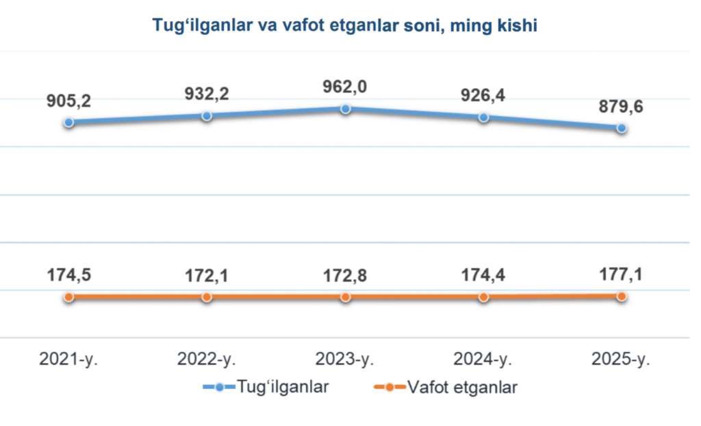
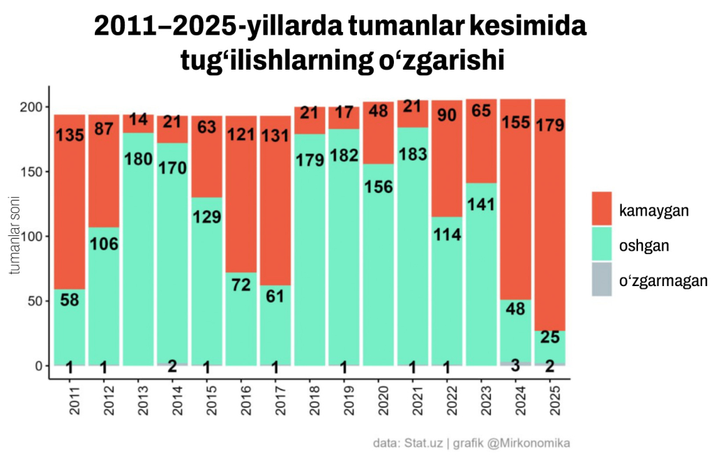

O‘zbekiston demografiyasidagi o‘zgarishlar (2025-yil yakunlari)
Yil boshida O‘zbekiston aholisi 38 mln 236 ming kishiga yetdi, ammo demografik ko‘rsatkichlarda salbiy o‘zgarishlar kuzatildi: tug‘ilishlar kamaydi, nikohlar qisqardi, ajralishlar va o‘limlar esa oshdi. 2026-yilning 1-yanvar holatiga ko‘ra, O‘zbekistonning doimiy aholisi soni 38 mln 236 ming kishini tashkil etgan. Bu o‘tgan yilning shu davriga nisbatan 1,8 foizga ko‘p.
Tug‘ilganlar va vafot etganlar
2025-yil yanvar–dekabr oylarida tug‘ilganlar soni 879,6 ming nafarni tashkil etgan bo‘lsa, vafot etganlar 177,1 ming nafarni tashkil etdi. Natijada tabiiy o‘sish 702,5 ming kishiga teng bo‘ldi. Xususan, 2025-yildagi tug‘ilishlar soni 2024-yilga nisbatan 46,8 mingtaga (5,1 foizga), 2023-yilga nisbatan esa 82,4 ming kishiga (8,5 foizga) kamaygan. Ya’ni tug‘ilishlar ketma-ket ikkinchi yil qisqarmoqda.
Hududlar kesimidagi tahlil
2025-yilda tug‘ilish kamaygan tumanlar soni so‘nggi 15 yildagi eng yuqori ko‘rsatkich bo‘ldi. Yil davomida 179 ta tuman va shaharda tug‘ilish pasaygan. 2024-yilda esa bunday hududlar soni 155 ta edi.

O‘g‘il bolalar ko‘proq tug‘ilmoqda
2025-yilda 454,7 mingta o‘g‘il bola (51,7%), 424,9 mingta qiz bola (48,3%) tug‘ilgan. Respublika bo‘yicha har 100 nafar qiz bolaga 107 nafar o‘g‘il bola to‘g‘ri keladi.

2025-yilda jami 146 ta tuman va shaharda o‘g‘il bolalar ulushi tabiiy me’yordan (105) yuqori bo‘lgan.